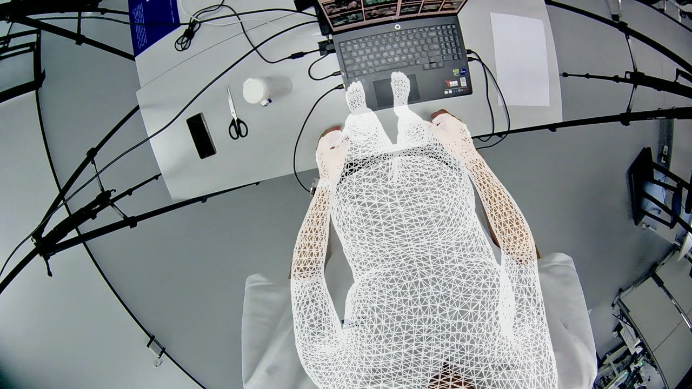
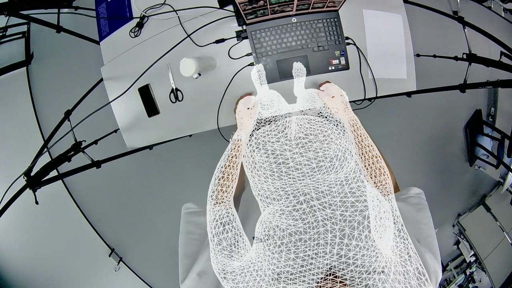
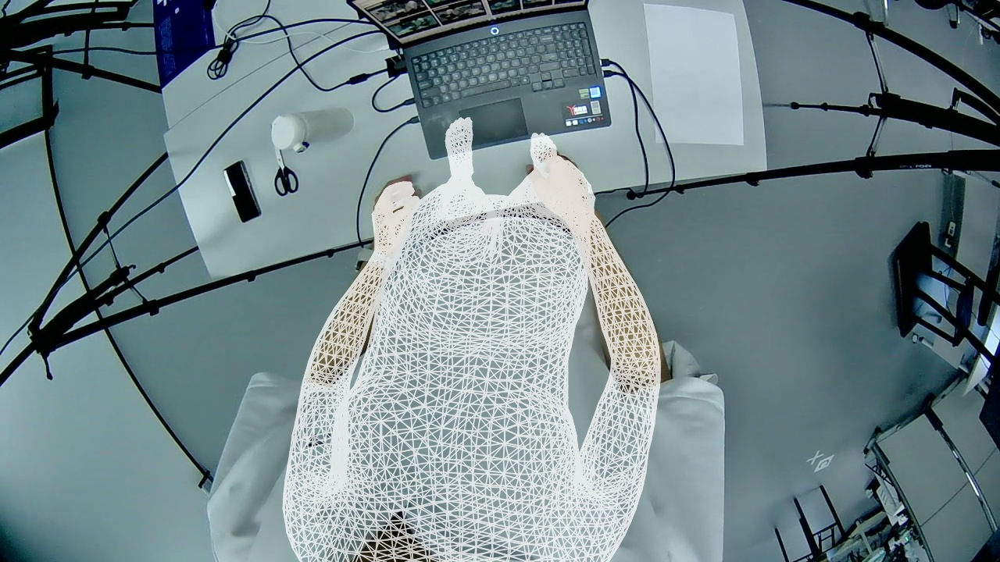
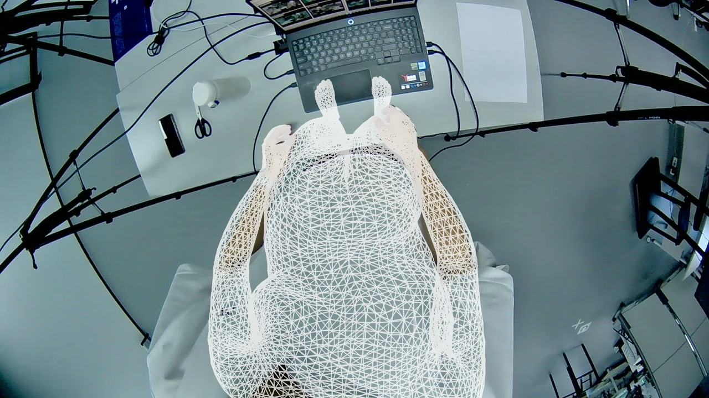

固定样本 · new_001
新样本 001 · 29.0 秒
按实际视频 PTS 配对；时间接近不等于已证明硬件同步。




二维 RMSE · 原 → 联合身体 74.8 → 94.8 px左手 9.6 → 7.6 px右手 11.6 → 10.7 px




二维 RMSE · 原 → 联合身体 77.3 → 99.7 px左手 8.5 → 7.1 px右手 10.9 → 5.9 px
局部三维检查
左手／前臂：6 → 195 对右手／前臂：5 → 30 对
统计原 cam3 完整网格与联合网格的局部非共面相交面配对。排除共面接触和共享顶点；不是相交体积，也不是整身无自交认证。